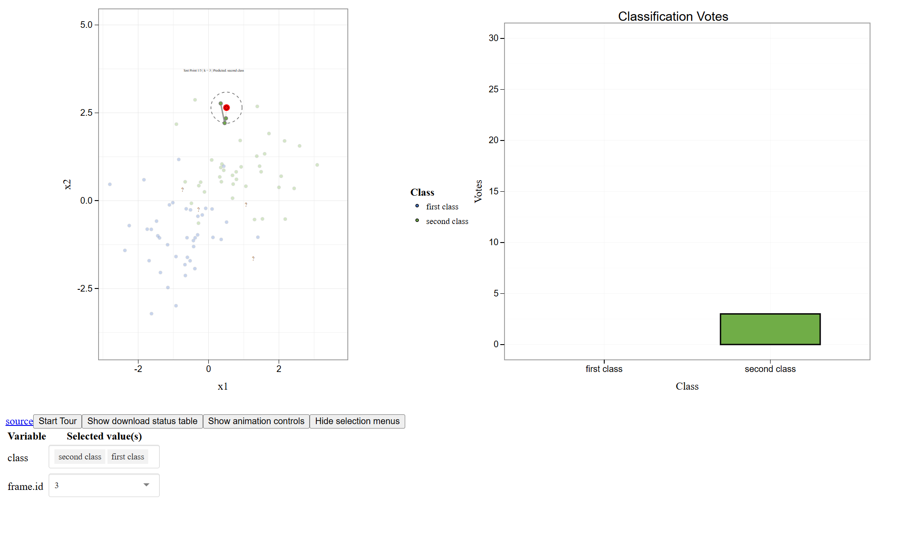
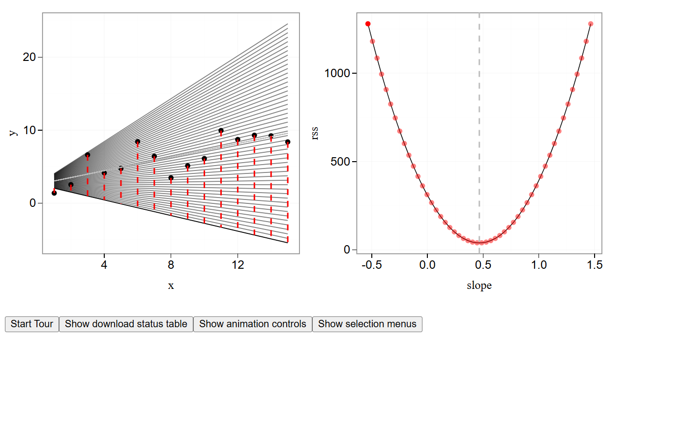
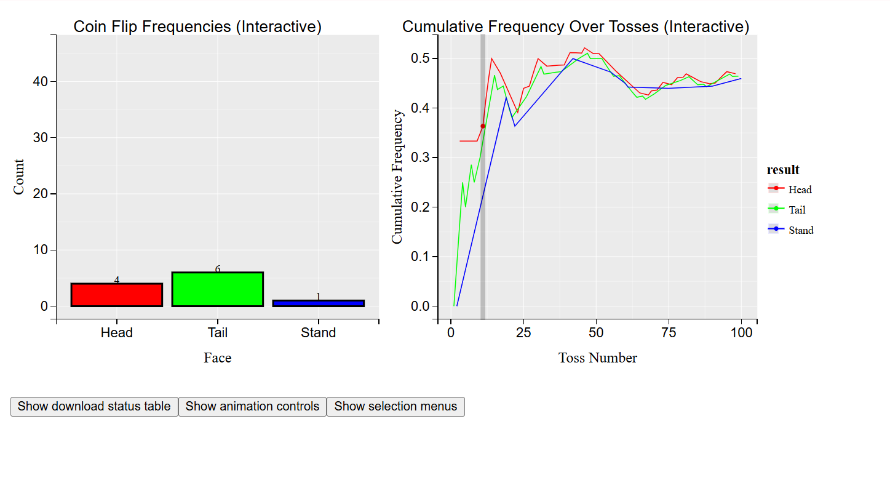
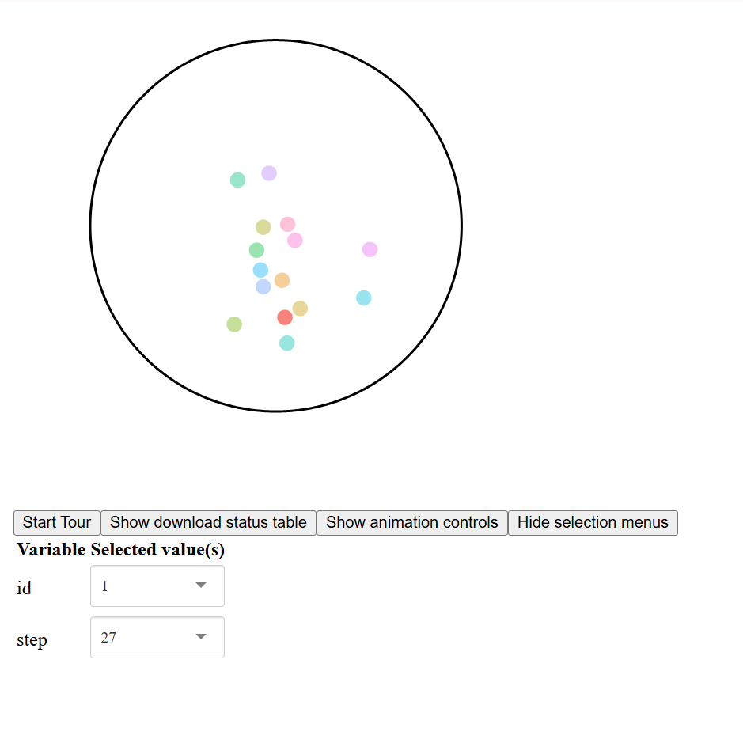
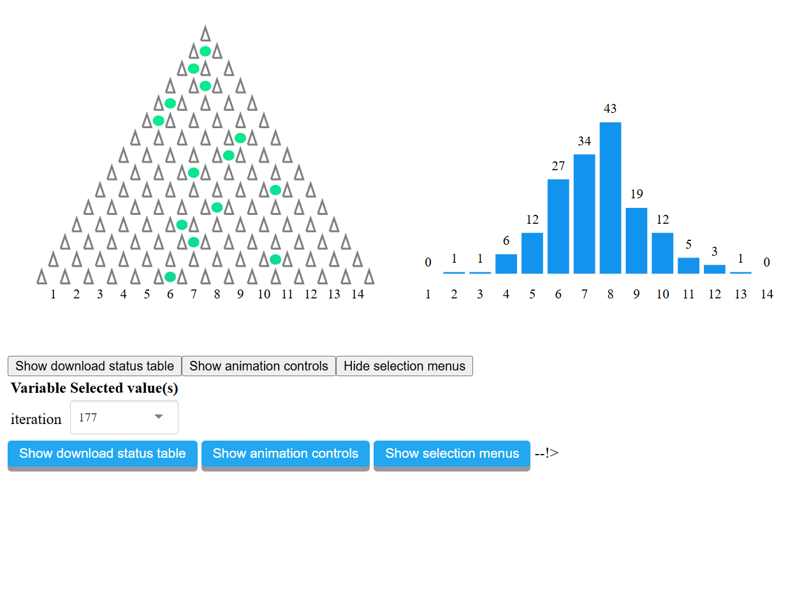
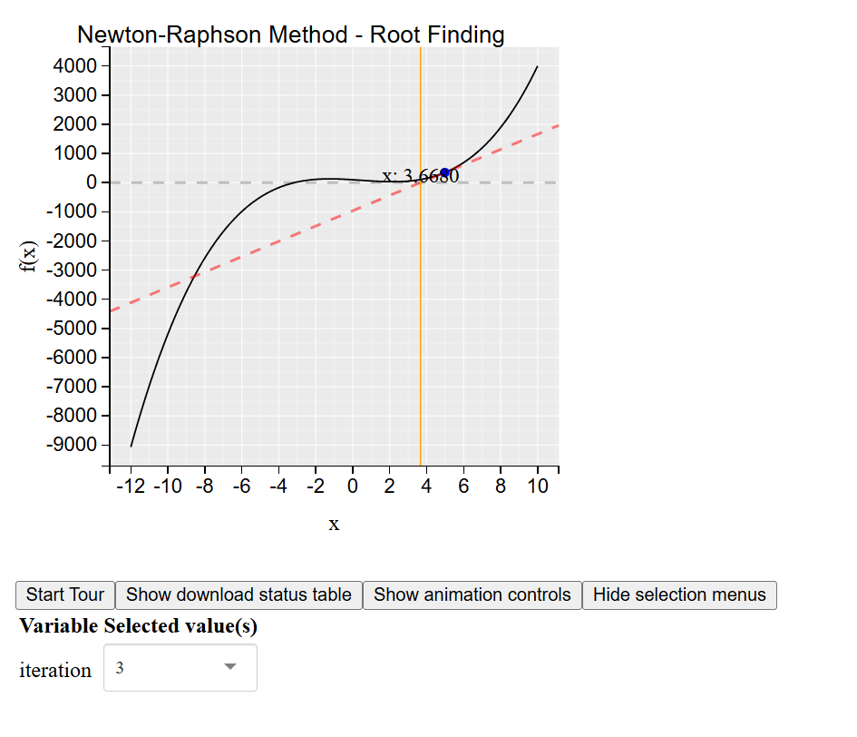
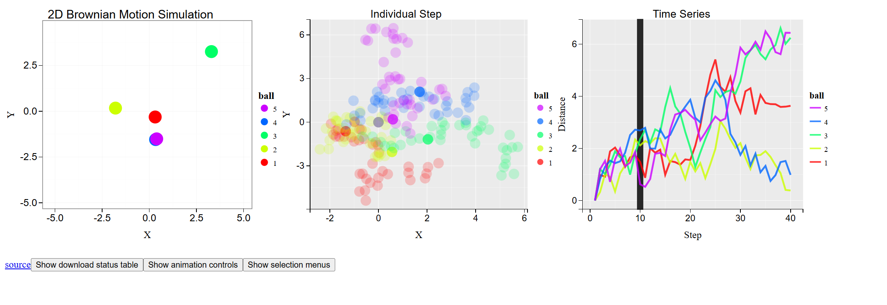

Interactive Statistical Visualizations with Animint2
7
Interactive Visualizations

<h3 class="viz-title">k-Nearest Neighbours Classification</h3>
<div class="viz-links">
<a href="https://Aryan-SINGH-GIT.github.io/knn-animint/" target="_blank">?? View Live</a>
<a href="https://github.com/Aryan-SINGH-GIT/knn-animint" target="_blank">?? Repository</a>
<a href="https://github.com/Aryan-SINGH-GIT/animated-interactive-ggplots/blob/master/02_animint2_interactions/knn_animint.R" target="_blank">?? Source Code</a>
</div>
<h3 class="viz-title">Least Squares Method</h3>
<div class="viz-links">
<a href="https://AviraL0013.github.io/least-squares-animint/" target="_blank">?? View Live</a>
<a href="https://github.com/AviraL0013/least-squares-animint" target="_blank">?? Repository</a>
<a href="https://github.com/AviraL0013/least-squares-animint/blob/main/source/least_squares_animint.R" target="_blank">?? Source Code</a>
</div>
<h3 class="viz-title">Probability in flipping coins</h3>
<div class="viz-links">
<a href="https://busttech.github.io/deploy2/" target="_blank">?? View Live</a>
<a href="https://github.com/busttech/deploy2" target="_blank">?? Repository</a>
<a href="https://github.com/busttech/Test-solutions-of-animint/blob/main/Medium-test-solution/main.r" target="_blank">?? Source Code</a>
</div>
<h3 class="viz-title">Brownian Motion in a Circle</h3>
<div class="viz-links">
<a href="https://prateek-kalwar-95.github.io/brownian_motion_in_Circle/" target="_blank">?? View Live</a>
<a href="https://github.com/prateek-kalwar-95/brownian_motion_in_Circle" target="_blank">?? Repository</a>
<a href="https://github.com/prateek-kalwar-95/brownian_motion_in_Circle/blob/main/Brownian.R" target="_blank">?? Source Code</a>
</div>
<h3 class="viz-title">Demonstration of the Galton Box</h3>
<div class="viz-links">
<a href="https://shubhammittal588.github.io/Galton_box/" target="_blank">?? View Live</a>
<a href="https://github.com/shubhammittal588/Galton_box" target="_blank">?? Repository</a>
<a href="https://github.com/shubhammittal588/Animated_interactive_ggplots_GSoC_Tasks/blob/main/galton_box_final.R" target="_blank">?? Source Code</a>
</div>
<h3 class="viz-title">Newton-Raphson method</h3>
<div class="viz-links">
<a href="https://suhaani-agarwal.github.io/newton_raphson_method/" target="_blank">?? View Live</a>
<a href="https://github.com/suhaani-agarwal/newton_raphson_method" target="_blank">?? Repository</a>
<a href="https://github.com/suhaani-agarwal/r/tree/main/medium_test_newtons_method_code/newtons_root.r" target="_blank">?? Source Code</a>
</div>
<h3 class="viz-title">Demonstration of Brownian Motion</h3>
<div class="viz-links">
<a href="https://Vatsal-Rajput.github.io/BrownianMotion/" target="_blank">?? View Live</a>
<a href="https://github.com/Vatsal-Rajput/BrownianMotion" target="_blank">?? Repository</a>
<a href="https://github.com/Vatsal-Rajput/Animint2Test" target="_blank">?? Source Code</a>
</div>